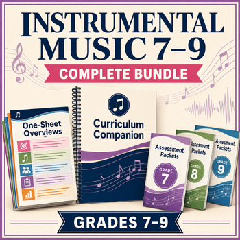

Complete Bundle
Instrumental Music 7–9 Curriculum Companion Bundle
Take the guesswork out of planning, teaching, and assessing Alberta’s Instrumental Music 7–9 Program of Studies.
This connected system brings together the full Curriculum Companion, Grade 7–Music 30 one-page overviews, and individual assessment packets for Grades 7–9.
- A developmental grade-by-grade curriculum pathway
- Quick-reference scope and sequence overviews
- Printable, year-long student assessment records